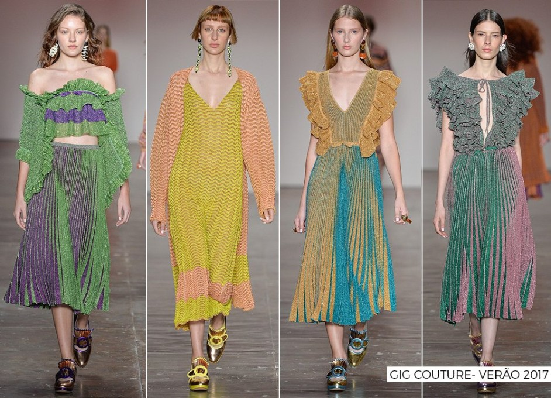
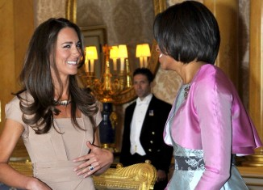
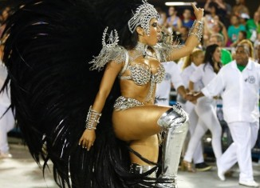

BATOM MARROM: DESCUBRA A TONALIDADE PERFEITA PRA VOCÊ!!
Desde 2016 uma tendência de beleza tem se mostrado presente tanto nas passarelas, quanto nos red carpets e street style: o batom marrom! E parece que ele vai continuar firme e forte durante todo o ano de 2017
CONHEÇA O CREME ANTI-IDADE DE KATE MIDDLETON E MICHELLE OBAMA
Não é a primeira vez que falo aqui sobre um creme anti-idade, mas dessa vez minha sugestão vem de fontes quentíssimas! Descobri qual é o renew usado por duas mulheres poderosas: Michelle Obama e Kate Middleton! Quem deu a dica
CAROL CASTRO REVELA SEGREDOS DE BELEZA DURANTE A GESTAÇÃO”
Mais uma celebridade passou a fazer parte do time das mamães! Aos 32 anos, Carol Castro descobriu que está grávida de seu primeiro bebê, uma menina que já recebeu o nome de Nina. E foi nos bastidores das gravações do
FAÇA VOCÊ MESMA: CARIMBO PARA DELINEADO GATINHO!

Um dos grandes desafios do mundo da beauté continua sendo fazer o delineado gatinho perfeito, sem borrar, nem tremer e principalmente: deixar um lado igual ao outro! A verdade é que até mesmo os maquiadores profissionais mais experientes, vez ou
ANITTA REVELA TRUQUE PARA DISFARÇAR CELULITE NO CARNAVAL
Descobri a dica que faltava pra gente fechar os preparativos para o Carnaval 2017 com chave de ouro! Depois de mostrar cinco opções de acessórios de cabelo para a sua fantasia e sugerir mais de 60 maquiagens para você arrasar
OSCAR 2017: CONFIRA MEUS CABELOS E MAQUIAGENS PREFERIDOS
Na noite do último domingo (26) aconteceu em Hollywood a premiação mais importante do cinema: a 89ª edição do Academy Awards – mais conhecido como Oscar! E se as celebridades arrasaram nas telinhas, com certeza também não decepcionaram no tapete